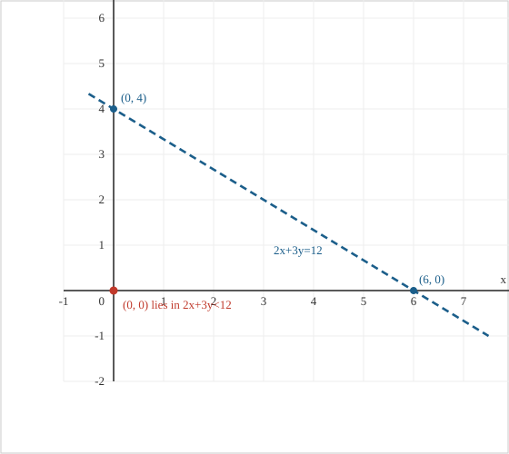

<script src="/assets/redirect.js"></script>
<section class="theory" data-section="IGCSE-14.3">
<h2>14.3 Regions in a plane</h2>
<p class="src">Based on Cambridge IGCSE Mathematics Core and Extended Coursebook, 3rd edition (Karen Morrison and Nick Hamshaw), Chapter 14 Further solving of equations and inequalities, printed pp.445–451 (horizontal and slanted boundaries, test points, solid and broken lines, and simultaneous inequalities as in Worked examples 11–15). Printed pages were read from rendered scans of part_044 (printed 445–451). Own wording and new numbers.</p>
<p class="key-words"><strong>Key words:</strong> <em>region</em>, <em>simultaneous inequalities</em></p>
<h3>A region is a set of points</h3>
<p>A <strong>region</strong> in the plane is a set of points \((x,y)\) that satisfy an inequality. The boundary is the straight line obtained by replacing the inequality sign with an equals sign. If the inequality does not include equality (\(&lt;\) or \(&gt;\)), the boundary is drawn as a broken line and is not part of the region. If equality is included (\(\leqslant\) or \(\geqslant\)), the boundary is a solid line and belongs to the region.</p>
<p>For a line written as \(y=mx+c\), the inequality \(y&gt;mx+c\) is the region above the line and \(y&lt;mx+c\) is the region below it. For a line not already in that form, test a convenient point (often the origin, if it is not on the line) to see which side is required.</p>
<div class="worked-example">
<h4>Worked example 1</h4>
<p class="src">Book: Worked example 11 style, printed p.447. New numbers.</p>
<p>The line \(2x+3y=12\) is drawn as a broken line. Which region represents \(2x+3y&lt;12\)?</p>
<ol class="steps">
<li>The line meets the axes at \((6,0)\) and \((0,4)\). <span class="mark">B1</span></li>
<li>The origin is not on the line. Substituting \(x=0\), \(y=0\) gives \(0&lt;12\), which is true, so the origin lies in the required region. <span class="mark">A1</span></li>
</ol>
<p class="final"><strong>Answer:</strong> the region on the origin side of the broken line \(2x+3y=12\)</p>
</div>
<figure><figcaption>The broken line \(2x+3y=12\). The origin satisfies \(2x+3y&lt;12\).</figcaption></figure>
<h3>Simultaneous inequalities</h3>
<p><strong>Simultaneous inequalities</strong> must all be true at once. Each inequality has its own boundary. The required region is the overlap (the set of points that satisfy every inequality). It is often clearer to shade the <em>unwanted</em> regions and leave the required region unshaded.</p>
<div class="worked-example">
<h4>Worked example 2</h4>
<p class="src">Book: Worked example 15 style, printed pp.450–451. New numbers.</p>
<p>Describe the boundaries of the region defined by \(y&lt;x+1\), \(y\leqslant 3\) and \(x\geqslant 1\).</p>
<ol class="steps">
<li>\(y=x+1\) is a broken line (equality is not included). \(y=3\) and \(x=1\) are solid lines. <span class="mark">B1</span></li>
<li>The required region is below the broken line, on or below \(y=3\), and on or to the right of \(x=1\). <span class="mark">A1</span></li>
</ol>
<p class="final"><strong>Answer:</strong> below the broken line \(y=x+1\), on or below the solid line \(y=3\), and on or to the right of the solid line \(x=1\)</p>
</div>
<h3>Common mistakes</h3>
<ul>
<li>Using a solid line when the inequality is strict (or a broken line when equality is included).</li>
<li>Testing a point that already lies on the boundary (the origin is useless if the line passes through it).</li>
<li>Shading the wanted region when the question asks you to shade the unwanted regions, or the other way around.</li>
</ul>
<h3>Quick checks</h3>
<div class="quick-check">
<h4>Quick check 1</h4>
<p>The line \(2x+y=10\) meets the \(y\)-axis at \((0,k)\). What is the value of \(k\)?</p>
<details><summary>Worked solution</summary>
<ol class="steps">
<li>When \(x=0\), \(y=10\), so \(k=10\). <span class="mark">A1</span></li>
</ol>
<p class="final"><strong>Answer:</strong> \(10\)</p>
</details>
</div>
<div class="quick-check">
<h4>Quick check 2</h4>
<p>The line \(3x+2y=12\) meets the \(x\)-axis at \((k,0)\). What is the value of \(k\)?</p>
<details><summary>Worked solution</summary>
<ol class="steps">
<li>When \(y=0\), \(3x=12\), so \(k=4\). <span class="mark">A1</span></li>
</ol>
<p class="final"><strong>Answer:</strong> \(4\)</p>
</details>
</div>
<div class="quick-check">
<h4>Quick check 3</h4>
<p>How many of the points (0, 1), (1, 3) and (2, 2) satisfy \(y&gt;x\)?</p>
<details><summary>Worked solution</summary>
<ol class="steps">
<li>(0, 1) and (1, 3) do; (2, 2) does not. So \(2\) of the points satisfy the inequality. <span class="mark">A1</span></li>
</ol>
<p class="final"><strong>Answer:</strong> \(2\)</p>
</details>
</div>
<p class="marks-key"><strong>Marks:</strong> M = method, A = accurate answer (depends on M), B = independent mark. Leave exact values exact.</p>
</section>
